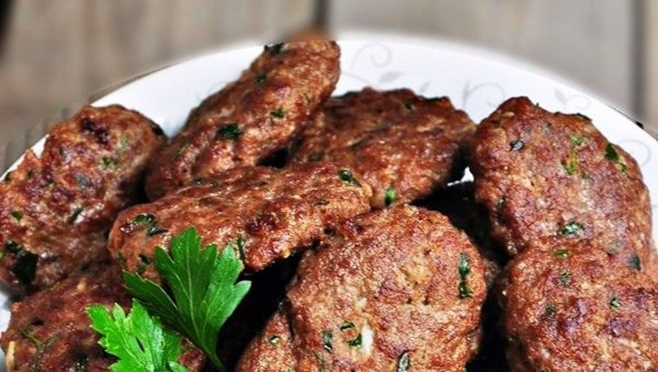

Turkish Kofte

A staple of Turkish cousine, Köfte is the main way to make Turkish style meatballs. It can be as easy or as complicated as you want it to be.
The Turkish are not afraid of using exotic spices combinations and this dish is no exception.
There is two parts to every köfte, the spice and the meat. Both parts are covered in our recipe below.
Prep Time
5 Minutes
Cook Time
10 Minutes
Total Time
15 Minutes
Ingredients
Makes about 12 kofte
- 450 grams of Ground Beef or Lamb, or prefably a combination of two
- 1 Egg
- 50 grams(1 cup) of bread crumbs
- 3 teaspoons of Köfte Spice Mix
- 4 sprigs fresh parsley, minced
- 2 cloves of garlic, minced
- 1 samll onion, minced
- 3 teaspoon salt
Kofte Spice Mix
This spice mix can be used in marinades and soups as well.
- 1 teaspoon(2.5 grams) of each
- Cumin
- Coriander
- Sweet Paprika
- Sumac
- Dried Mint
- 1/2 teaspoon of each
- Cinnamon
- Allspice
- Ginger
- Nutmeg
- Cayenne Pepper(optional
Instrucions
- Combine all of the dry spices.
- Combine all ingredients in a bowl with your hands. Do not over mix which will change the texture of the meat.
- Form the mixture into a flattened oval shape.
- The balls can either be grilled or fried in a pan. Cook until done all of the way through (about 5 minutes on each side).
Home